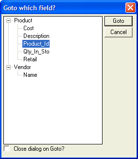

Using the Navigator
The Navigator is a modeless dialog box that displays all the fields on a form or browse in a tree control. With the Navigator you can instantly navigate to any field on the form or browse.
To use the Navigator while in a form or browse:
Click Form > Navigator or Browse > Navigator.
Select the field you want to go to.
Click Goto.
